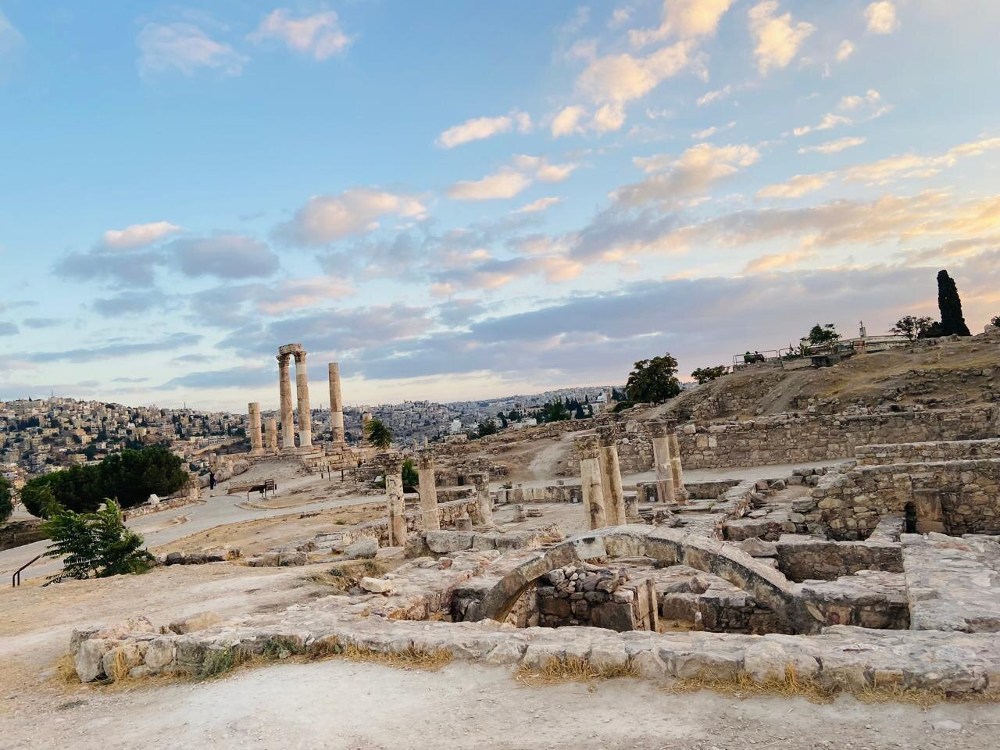

Amman Governorate
Amman
Our story begins on hills that wake to the sound of Al-Balad.

The city opens on its hills
Start at the Citadel, where the view gathers the hills of Amman into one frame. Then head down to the Roman Theatre and the streets of downtown. On foot, the distance between the old city and the everyday city feels shorter.
Leave time for coffee, a plate of hummus, and a wander through the market. The capital is a good place to begin the journey because its history is right there among the shops, stairs and conversations.
We leave Amman’s busy stairs for another city of hills, where the stone turns honey-yellow.